妖刀系列--外残月刀
#1 妖刀系列--外残月刀 作者：邓飞 发表时间：2009-4-30 22:27:34
外残月刀在5手2打规则下，白大优
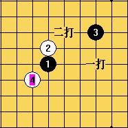
(这个白4,一打为黑必胜)
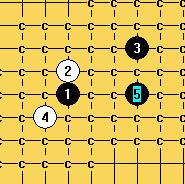
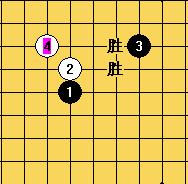
(以上这个白4,黑5在以上两点都为黑必胜)
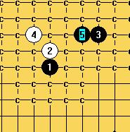
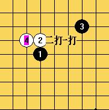
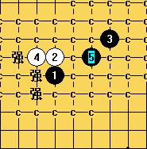
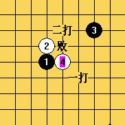
(以上这个4为最强的4,一打黑白可战,二打白大优,其余的5都是必败)
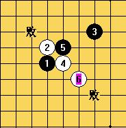
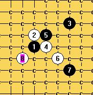
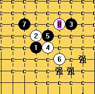
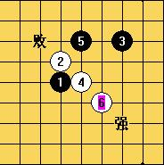
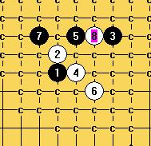
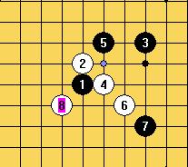
(以上这个8不是很好的8,是平衡的下法,列举白8下在这里,黑强防后,黑白可战)
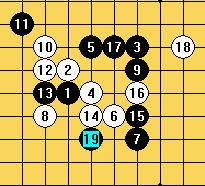
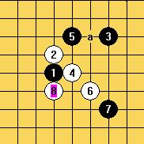
(以上这个8是黑必胜)
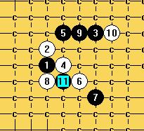
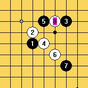
(以上这个白8是实用的，平衡下法)
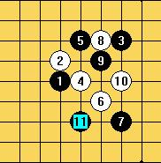
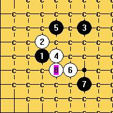
(以上这个白8为白棋最强下法,几乎白必胜)
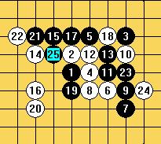
(前13手都是黑最强且唯一应法,后面白优)
［ 岳麓小棋后 于 2009-4-30 22:28:49 时花20金币送鲜花一朵］
［ 潇洒 于 2009-4-30 22:55:15 时奖励此帖[金币加 20 威望加1］
［ 炫飞柳扶风 于 2009-4-30 23:05:49 时花20金币送鲜花一朵］
#2 Re:妖刀系列--外残月刀 作者：没定式随便下 发表时间：2009-4-30 22:35:29
这个是真心老师的讲课还是他的棋谱啊？为什么只有截图呢？#3 Re:妖刀系列--外残月刀 作者：流逝 发表时间：2009-4-30 22:44:28
这个是真心讲课的内容 建议以后能直接把棋谱作为附件传上来
#4 Re:妖刀系列--外残月刀 作者：逆刃 发表时间：2009-4-30 22:47:13
最后一个图的4最强，通外溪月最强4，图中的那个12错了，换个12就杀掉了，那一路杀掉了的话外残月也是白必胜了。#5 Re:妖刀系列--外残月刀 作者：炫飞冰弦 发表时间：2009-4-30 23:26:57
辛苦飞飞了,继续加油
#6 Re:妖刀系列--外残月刀 作者：流逝 发表时间：2009-5-1 0:27:40
 我不懂妖刀 翻了下我的谱也是真心说的那个12 逆刃能否告知换哪个12能必胜
我不懂妖刀 翻了下我的谱也是真心说的那个12 逆刃能否告知换哪个12能必胜
#7 Re:妖刀系列--外残月刀 作者：逆刃 发表时间：2009-5-1 1:01:51
ShowPost.asp?PageIndex=4&ThreadID=6407#8 Re:妖刀系列--外残月刀 作者：逆刃 发表时间：2009-5-1 1:10:17
错了，那个12是白败。具体是哪个现在我也不知道了。#9 Re:妖刀系列--外残月刀 作者：刀学生 发表时间：2009-5-1 11:22:48
邓飞是助教美女吧 哈哈哈哈#10 Re:妖刀系列--外残月刀 作者：邓飞 发表时间：2009-5-2 8:57:36
逆刃,你前面不负责任的就否定真心老师的那个12手是错的,害的大家这几天围绕你说的你那个12进行了一下研究,发现比真心老师的那个12还更难杀.
#11 Re:妖刀系列--外残月刀 作者：逆刃 发表时间：2009-5-2 9:01:02
我已经在8楼跟帖回复了，说那个12是白必败，其实我自己也拆了很长一段时间，这不能怪我吧。换个白12就必胜的说法是慎独说的，以至于我也拆了好长一段时间。ShowPost.asp?PageIndex=4&ThreadID=6407在这个帖子里也有说明。#12 Re:妖刀系列--外残月刀 作者：邓飞 发表时间：2009-5-2 9:15:27
希望逆刃对于这几天给予大家的误导及在此上面拆解发费的时间将功补过,给你一个月的时间找出一个必胜的12手出来